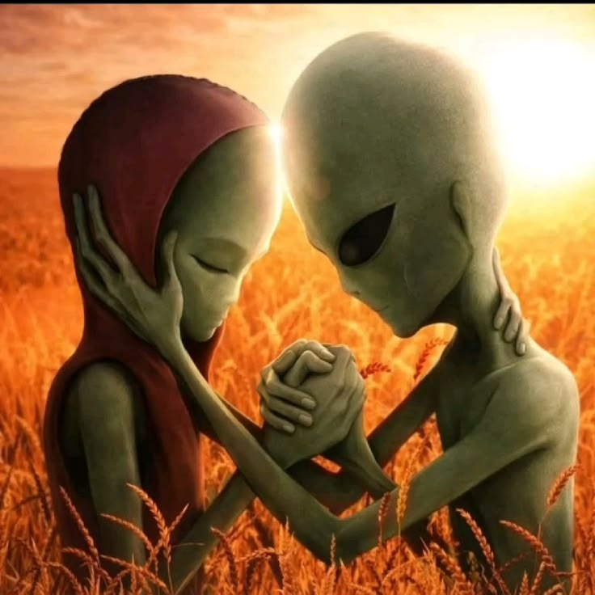
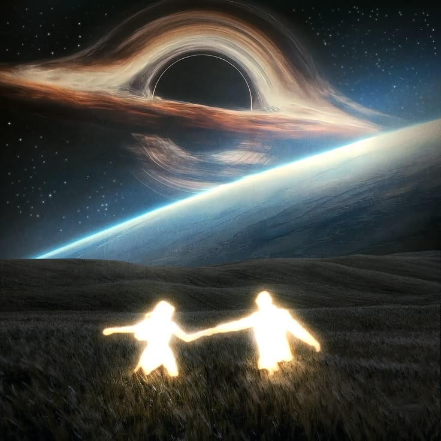

¿Qué son exactamente?
Los “seres estelares” son almas o entidades espirituales que han encarnado en la Tierra tras haber vivido en otros planetas, galaxias o dimensiones, con la misión de contribuir a la evolución espiritual y la transformación del planeta.

¿Hace cuanto estan en la tierra?
Según la espiritualidad moderna, los seres estelares (o starseeds) son almas avanzadas que han pasado por múltiples encarnaciones en distintos mundos antes de nacer en la Tierra. Realmente no se sabe cuanto hace que llegaron aqui lo que si se sabe es que puede o no ser humanos.

¿Cual es su proposito?
Han venido para experimentar los campos de conciencia cambiantes en el planeta Tierra 3D. Tienen roles específicos y una misión espiritual humanitaria basada en la ley de unidad para ayudar a liberar el alma planetaria de la opresión espiritual y energética impuesta por el plan de alienigena negativos a través de las religiones